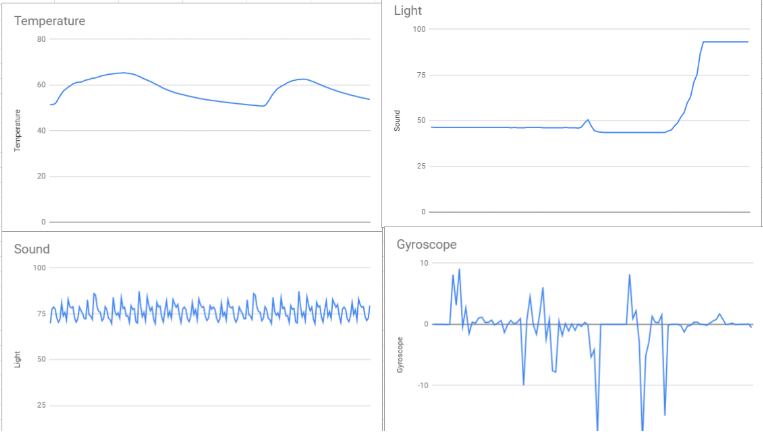
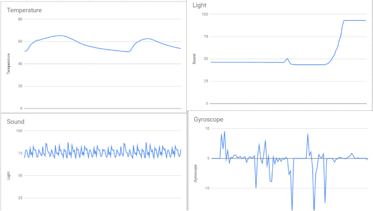
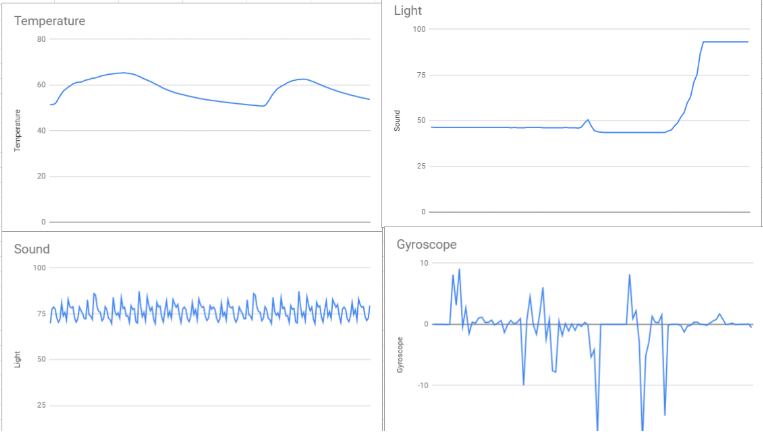

In this program, we use numerous pictures that we have set to become turtles, as the nest, and the chicken. The chicken asks how many eggs to lay, and what color each of them should be, and lays them into the nest below it. The eggs randomly have a chance of staying as eggs, turning into omelets, or becoming chicks.
Minion 2048.py
Our plan for the game is to do 2048 Minions so we will use our knowledge of onkeypress function, from the turtle escape maze we learned to use the similar functions that we will use to move the turtle/game, use functions with and without parameters, and we will use a background image for the 2048 map. Overall, we will create a game like 2048 but instead of numbers, combine alike minions!
Minion Checkers
We made an E-Card for kids in a children hospital using a combination of turtle and cv2 to combine coding elements to make a functioning checkers game and a video animation for the card to open and closing
A Phishy Fish tank.
We went through files of a smart fish tank to recognize some issues in the tank code that stops it from working and we fixed it.
Creating a command line GUI
We made a GUi of a terminal that checks for connectivity to a website url
Rover

We used sensor information that came from the rover to identify the area that it has landed as marsh lands comparing it to different descriptions of land descriptions
Honey data
We used USDA public census data to get a comma seperated value type file and coded a program to take the raw data from the file and output various types of informational graphs varying from line graphs to bar graphs.


 
